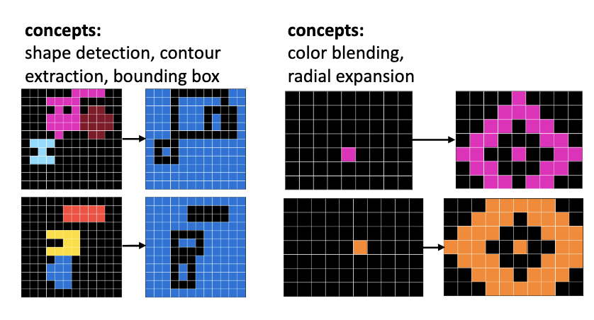

|
Yuqing Wu I'm a senior undergraduate student at Cornell University pursueing B.S. in CS and ORIE. I'm fortunate to work with Professor Qian Yang on AI-assisted writing to improve learning outcomes and with Professor Kevin Ellis on few-shot learning and program synthesis. I'm interested in building general-purpose AI systems that support and align with human goals and can learn autonomously through human interactions. |

|
Publications |
|

|
Combining Induction and Transduction for Abstract Reasoning
Wen-Ding Li, Keya Hu, Carter Larsen, Yuqing Wu, Simon Alford, Caleb Woo, Spencer M. Dunn, Hao Tang, Michelangelo Naim, Dat Nguyen, Wei-Long Zheng, Zenna Tavares, Yewen Pu, Kevin Ellis ICLR, 2025 |